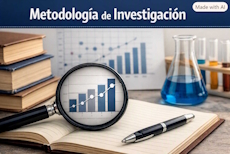
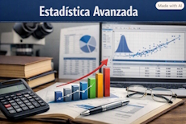
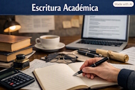
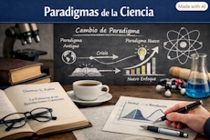
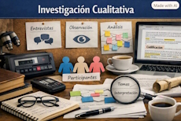
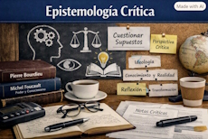

Metodología de Investigación
Fundamentos y técnicas para la investigación académica de posgrado.
Ver cursoPosgrado - Biblioteca Digital

Fundamentos y técnicas para la investigación académica de posgrado.
Ver curso
Modelos estadísticos multivariados y análisis de datos complejos.
Ver curso
Estrategias para redactar artículos, tesis y reportes científicos.
Ver curso
Kuhn, T. (1962). La Estructura de las Revoluciones Científicas.
Leer más
Hernández Sampieri et al. Metodología de la Investigación, 6a ed.
Leer más
Bourdieu, P. El oficio del científico: Ciencia de la ciencia y reflexividad.
Leer más
Guia paso a paso para revisar literatura académica eficientemente.
Ver video
Tutorial completo para organizar bibliografía y notas de lectura.
Ver video
Consejos prácticos para preparar y presentar la defensa doctoral.
Ver videoSección a completar como tarea: define aqui la estructura semantica para mostrar los recursos guardados por el usuario.